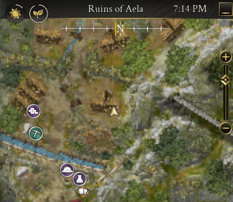

Zone: LionholdNPC: Zorrin of FennRequirement: 1 Silver
Speak with Zorrin of Fenn in Lionhold to begin X Marks the Spot. Have at least 1 Silver to receive the quest.
Steps
Meet Zorrin of Fenn in Lionhold to start the quest.
Travel to the Goblin Ruins (Ruins of Aela).
Interact with the shovel at the marked spot to complete the objective.
Return to Zorrin to turn in the quest for rewards.
Visual Guide
Top-left: Meeting Zorrin of Fenn to accept the quest.

Top-right: Map showing Zorrin’s location in Lionhold.Bottom-left: The object to interact with — the shovel inside the Goblin Ruins.Bottom-right: Map marking the shovel location in the ruins.